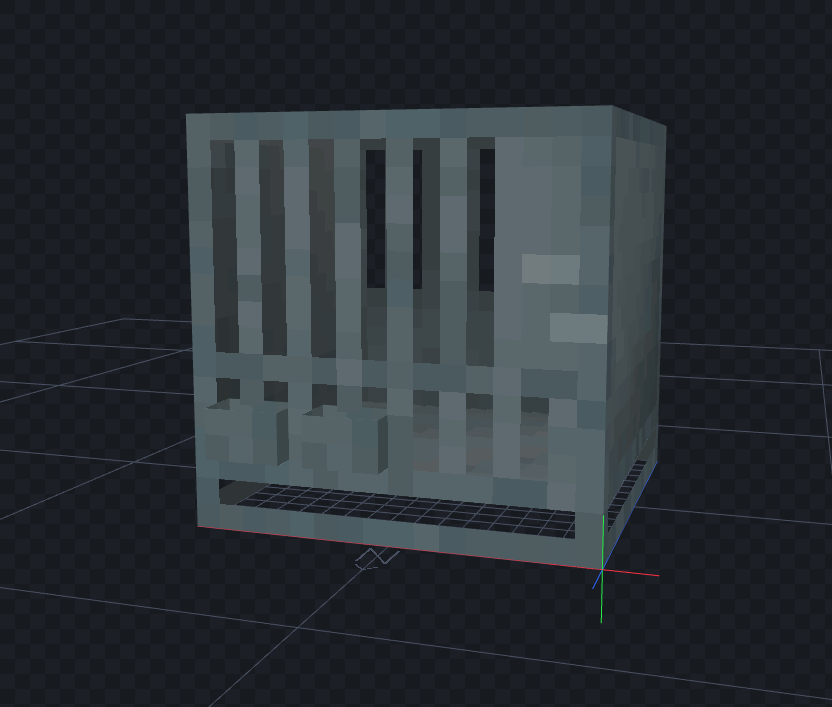
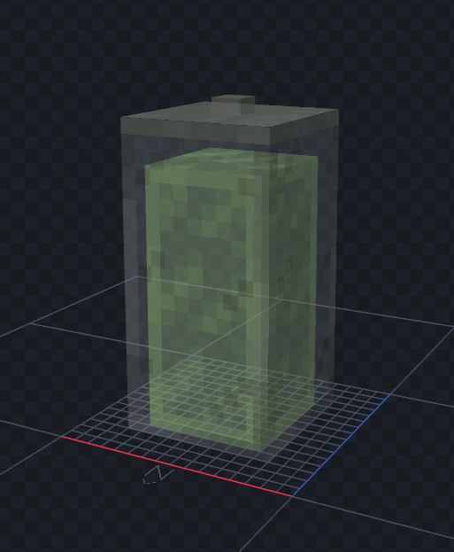
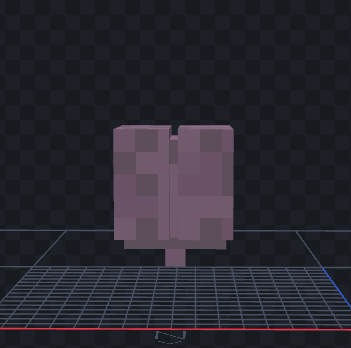
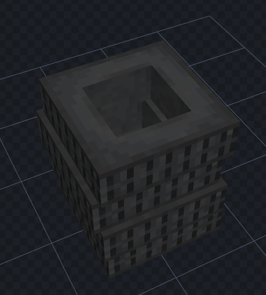

Zombiecraft 3D Generalist
Zombiecraft is a company that is creating a realistic zombie survival shooter inside minecraft. Using other fiction games as reference the artlead intended to create realistic looking pixelated models that follow Minecrafts base aesthetics. Combining realism and Minecraft aesthetics to create something completely new. I worked as a 3D Generalist creating props and textures as needed for each of the maps.







